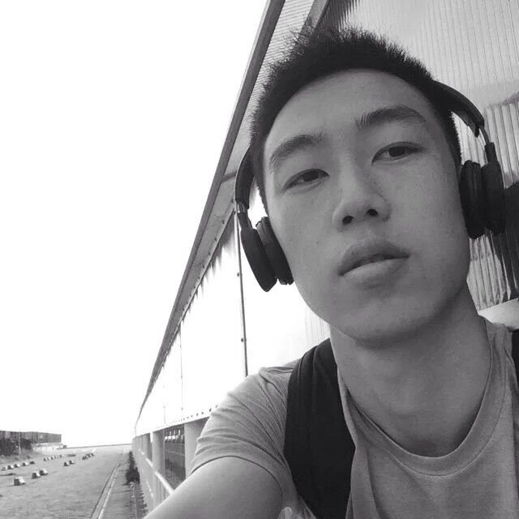

About me
Qinghua Zeng zqh070333@foxmail.com I am Qinghua and I am a 28 year old Chinese man, here in beautiful New Zealand on a working holiday visa. I am looking for a UI/UX/UE relating job. I have lots of experience in many working fields related to design, although I am a trained industrial designer. I would say I am a jack of all trades including graphic design(Illustrator/Photoshop), UI design (Axure), user research, 3D modeling (Rhino/Grasshopper/Alias)… the list goes on and on. But simultaneously I also know how to code (c++). As mentioned, I have a broad diversified skillset. I have working experiences in design studios and also in Philips, a world top 500 company. I am a quick learner who is reliable and loves to gain new skills. As a hard working person, I don’t mind long hours or weekend/night shifts. For the right offer I would definitely commit to stay long term, of course if we both sense that we are a good match. But also don’t shy away if your offer is only short term. I am flexible. I am confident I will make an immediate positive contribution to your company.
References
Qinghua Zeng has worked as an intern in Mathis Heller studio of Industrial & Automobile Design during March to July 2015. At that time, as a senior designer of the studio, I was mainly responsible for the design project of the studio, and also responsible for the management of the intern work. I experienced him as a very creative and self-motivated intern, proficient in sketching skills and also has a good sense of style. Until now, his internship works have been displayed in the studio. During his time in the studio he showed and further developed his design skills and communication skills in English. As a very quick learner he was also develop the software capabilities in a very short time. I can very much recommend Qinghua Zeng with full confidence. Although now I have left Heller Studio, please fell free let me know if you need any information about him. --Devin Li Senior designer, R&D Human Body Inspection Division of Nuctech ----------------------------------------------------------------------------------------------------------------------------------------------
I am delighted to write this reference letter for Qinghua Zeng, a brilliant employee of mine. I have known Qinghua Zeng since May 2016 as his line manager in Philips. Qinghua Zeng worked as a usability engineer at my department from July 2016 to March 2018. He was extremely hardworking and dedicated from very beginning and was always ready to learn more each day. He processed excellent design knowledges, communication skills and organization abilities. This work included user experience research and design to make our CT products to be safer and easier to use for our customers and compliance with FDA/IEC regulations. He learnt very quickly on how to handle these and completed all his tasks to our satisfaction. --Wenchong Ma Senior System V&V Manager, IS China Philips Creation Centre, Shenyang ========================================================================